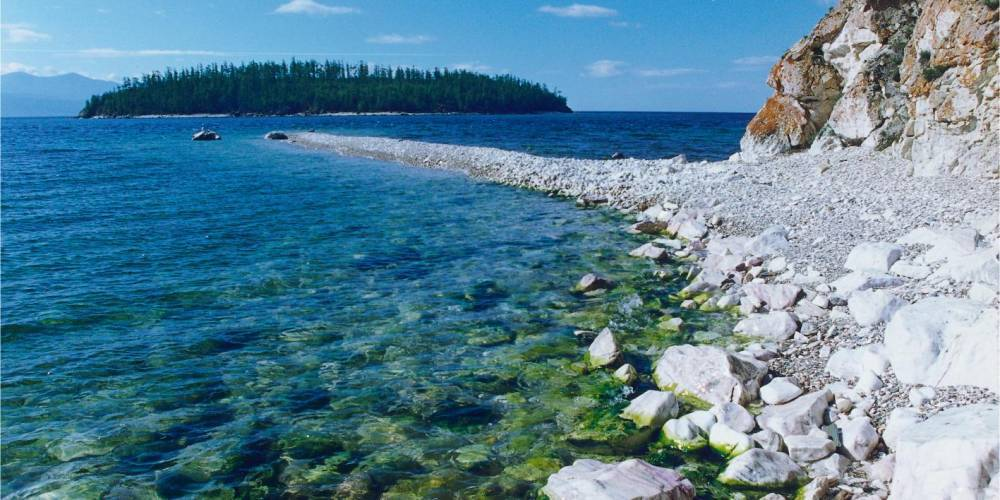
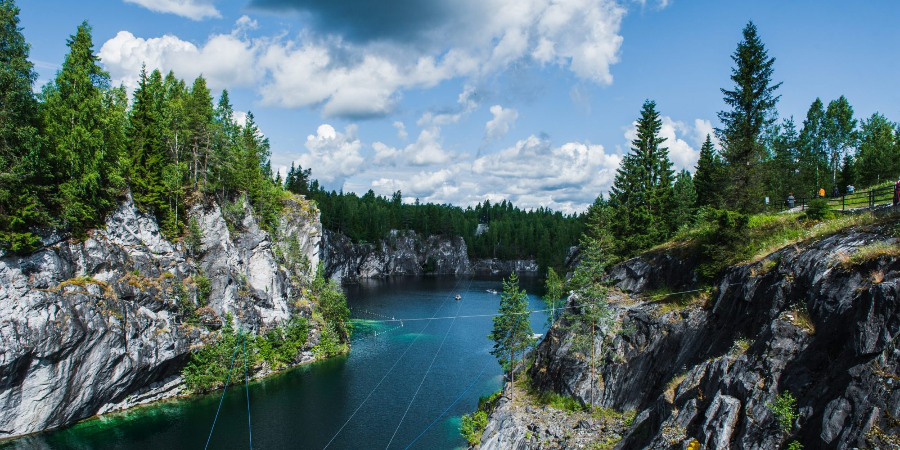
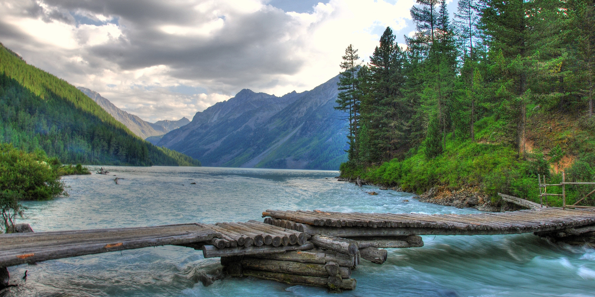

Hello! Here you can find information about areas of Russian nature !
Hi ! a am Sergey and i would like to tell you about areas of Russian nature .
Caucasus
Firstly,i will like to tell you about Caucasus . It is a region spanning Europe and Asia. It is situated between the Black Sea and the Caspian Sea. In Caucasus a lot of beautiful places, like Mount Elbrus. In the Caucasus a lot of scenic views. It is very scenic place !

lake Baikal
Secondly,i want to show you a lake Baikal. It is a biggest Russian lake an it have a amazing views. Look !

Karelia
Thirdly you can see Karelia views.Karelia it is an area in Northern Europe, which have lakes and waterfalls, giving the impression of a world with more water than land. I love it !

Altai
Fourthly , you can look at the Altai Republic. it is located in Siberia and the views in the mountain tops are amazing.

Kungur Ice Cave
Finaly, i want to show you a Kungur Ice Cave . It is a karst cave, located in the Urals , which have uncovers myriad grottoes, underground lakes, snow crystals, stalactites, and stalagmites. It is gorgeous !

That is all !
Youtube ;
VK ;
BandLab .